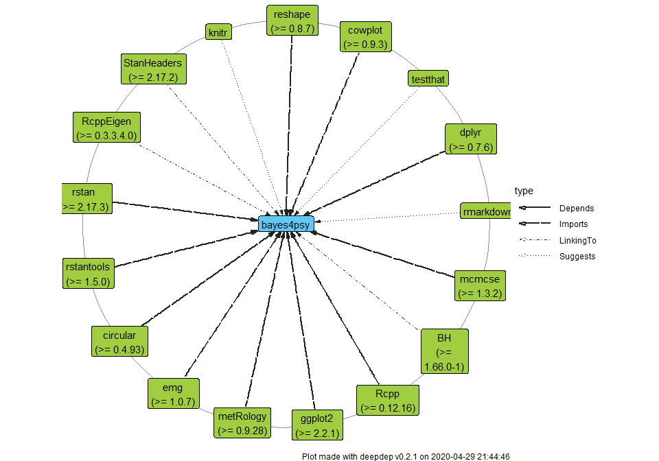

Visualise and Explore Deep Dependencies of R Packages
Overview
The deepdep package provides tools for exploration of package dependencies. The main deepdep() function allows to acquire deep dependencies of any package and plot them in an elegant way. It also adds some popularity measures for the packages e.g. in the form of download count through the cranlogs package. Uses the CRAN metadata database and Bioconductor metadata.
Exploration tools:
Visualisation tools:
plot_dependencies()plot_downloads()-
deepdep_shiny()runs shiny application that helps to produce a nice deepdep plot
Installation
# Install from CRAN: install.packages("deepdep") # Install the development version from GitHub: devtools::install_github("DominikRafacz/deepdep")
Examples introduction to the deepdep package
## origin name version type origin_level dest_level
## 1 ggplot2 digest <NA> Imports 0 1
## 2 ggplot2 glue <NA> Imports 0 1
## 3 ggplot2 gtable >= 0.1.1 Imports 0 1
## 4 ggplot2 isoband <NA> Imports 0 1
## 5 ggplot2 MASS <NA> Imports 0 1
## 6 ggplot2 mgcv <NA> Imports 0 1plot_dependencies(dd, "circular")

plot_dependencies("bayes4psy", show_version = TRUE, dependency_type = c("Depends", "Imports", "Suggests", "LinkingTo"))

## origin name version type last_day last_week last_month last_quarter last_half grand_total origin_level dest_level
## 1 xgboost Matrix >= 1.1-0 Imports 3044 19855 73472 255270 544340 4850922 0 1
## 2 xgboost data.table >= 1.9.6 Imports 23964 143005 511457 1584401 3169001 17607178 0 1
## 3 xgboost magrittr >= 1.5 Imports 196375 1338204 5097734 14864680 27025906 55832135 0 1
## 4 xgboost stringi >= 0.5.2 Imports 34102 200767 730874 2509641 4688808 26216128 0 1plot_downloads(dd_xgboost)
plot_dependencies(dd_xgboost, "tree", show_version = TRUE)